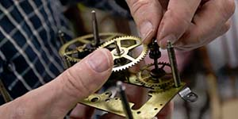

Services
We fix just about any clock you can think of: Wrist Watchs, Wall Clocks, Grandfather Clocks, and Cuckoo clocks. If you think your clock needs some repairing, then go on over to the Order tab, enter your information and send us your clock for a free consultation. If pricing is an issue we guarentee to send your clock back free of charge.